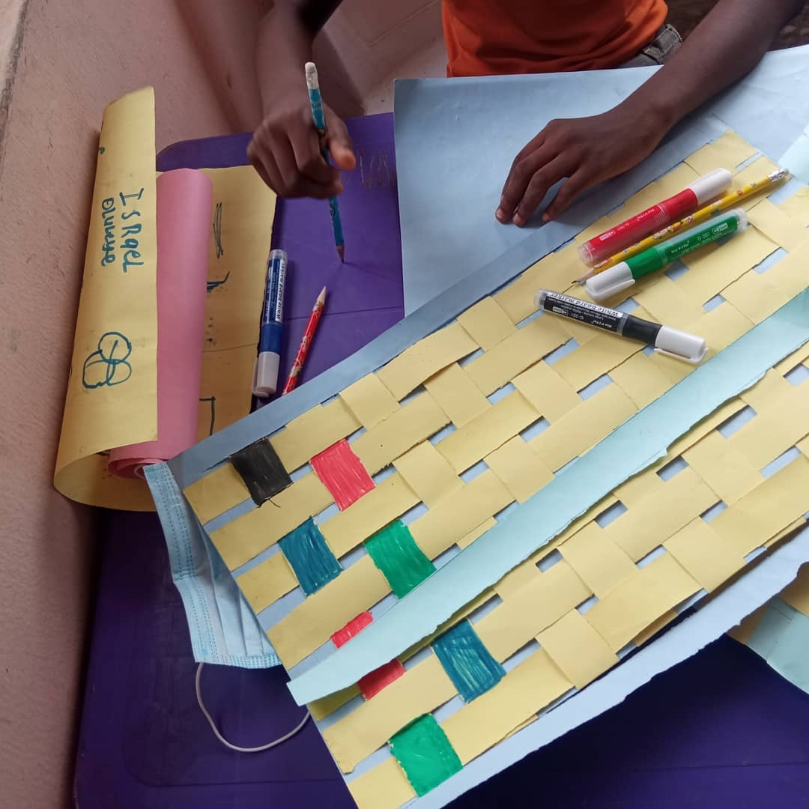
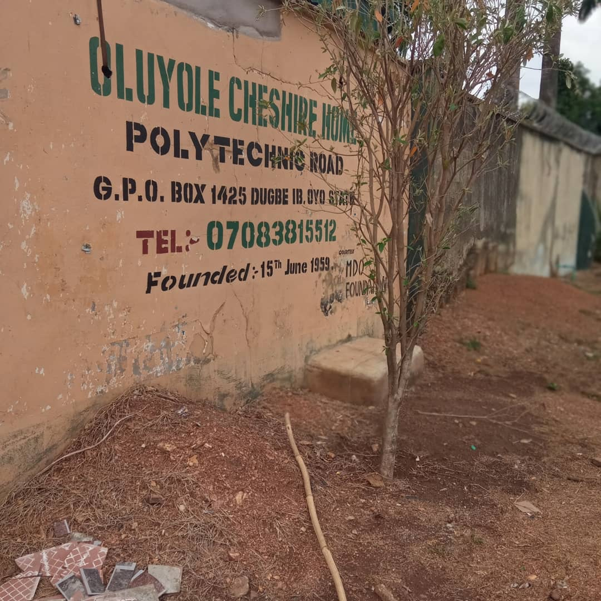
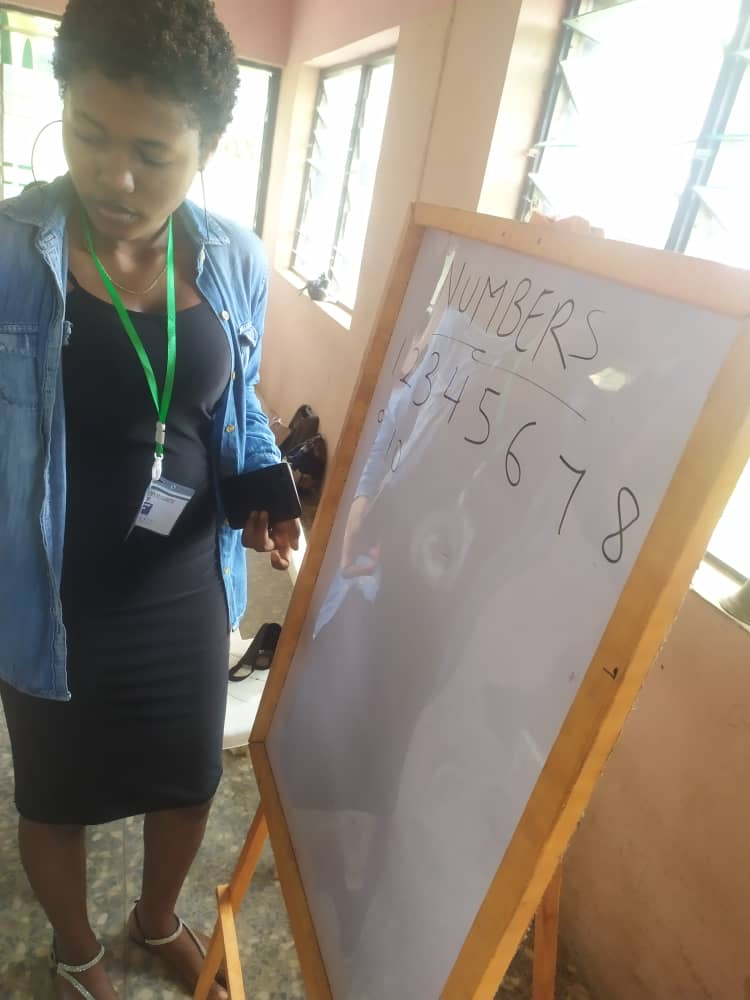
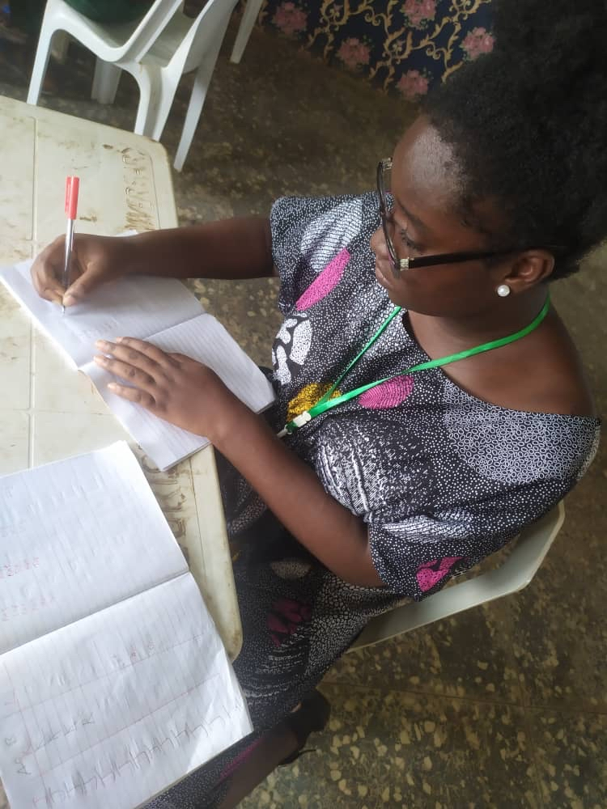
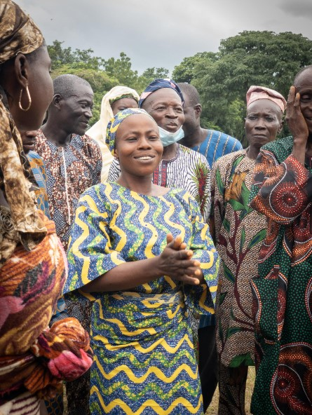
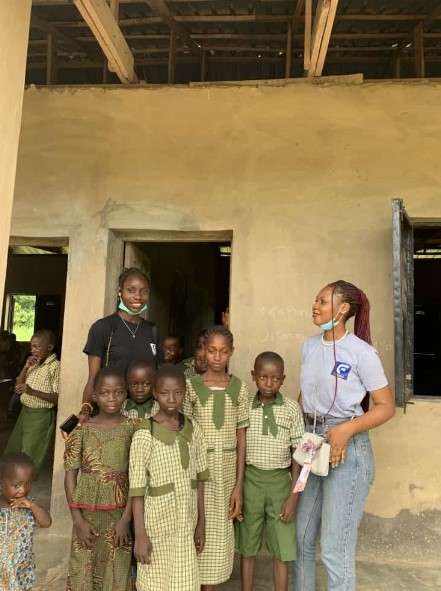
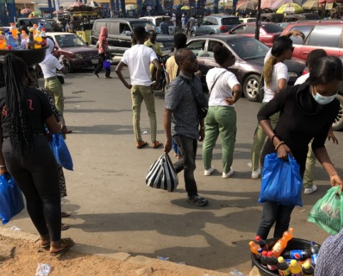
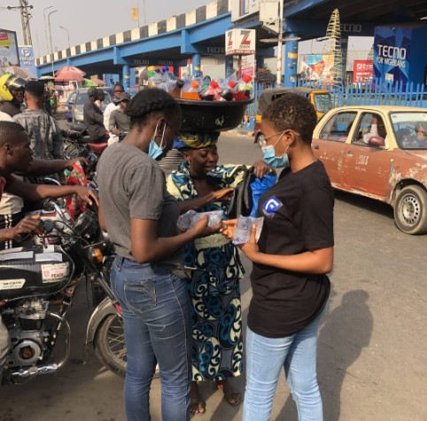
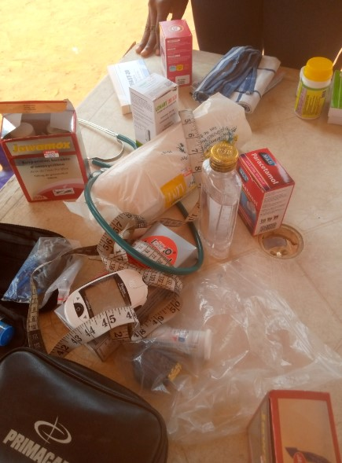
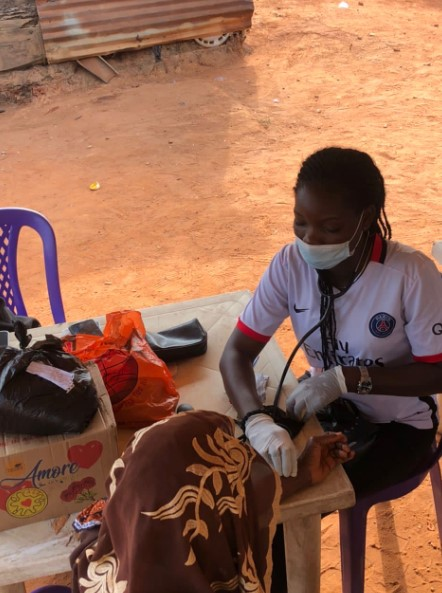

March
In March, we embarked on a literacy program with the children of Chesire home, Sango, Ibadan (a home that has become an adopted home for the organization). This program that spanned 4 weeks was aimed at teaching the younger children how to read and write and helping the older children prepare for life outside the home.




September
In September, we launched the annual “back to school outreach”. This outreach is aimed at encouraging children and parents in marginalized and low income communities to get interested in school. In 2021, we gave school essentials (bags, water bottles, books, stationery and socks) to fifty (50) students in a community school in Eruwa, Oyo state.


December
In celebration of our anniversary, we tend to explore outreaches that are different from our typical outreaches. In 2021, we embarked on a two-day outreach. The first day was a clothe drive. For this outreach, we gave out softly used clothes (that were donated) to 20+ people along the streets of Mokola, Roundabout and Sabo, Ibadan.


The second day was a medical outreach with over 30 residents of Odo-Osun, Berre Ibadan (a community that become an adopted community for the organization).

